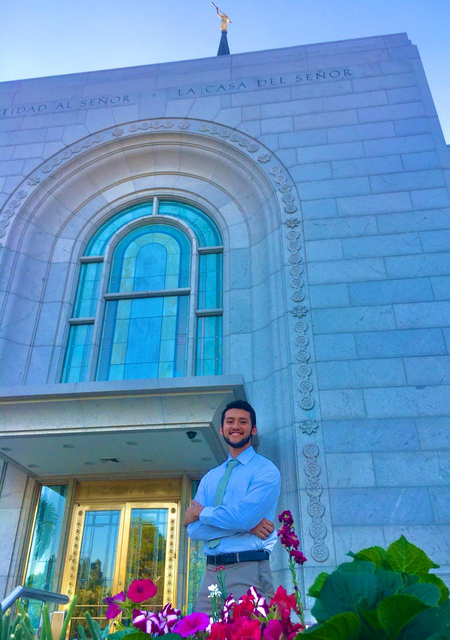

Jared Ramirez | WDD 130

Hi mi name is Jared Ramirez, I am 20 years old, I am from El Salvador and I like to spend time with my family Now I'm studying programming I love to learn more about this it is exciting for me, in my free time I like play the piano and play basketball with friends, this is a little about me.